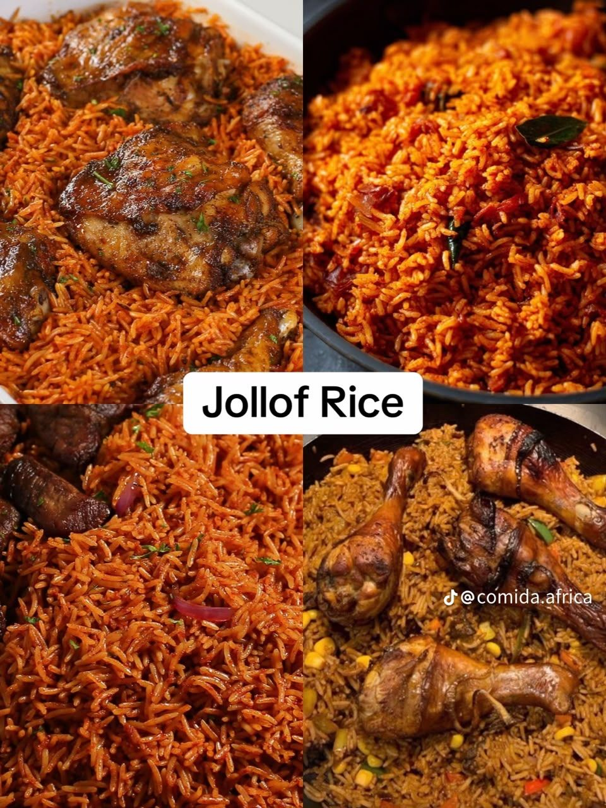

West Africa · Senegal
Jollof Rice
Jollof rice is a one-pot celebration dish across West Africa. Its roots are traced to the Senegambia region, and today Nigeria, Ghana, Senegal and many other countries proudly cook their own version for weddings, parties and family gatherings.

Ingredients
Quantities update automatically.
- 2 cups long-grain parboiled rice
- 4 ripe tomatoes
- 2 red bell peppers
- 1 scotch bonnet pepper, to taste
- 1 large onion
- 3 tbsp tomato paste
- 5 tbsp vegetable oil
- 2 cups chicken or vegetable stock
- 1 tsp dried thyme
- 1 tsp curry powder
- 2 bay leaves
- Salt, to taste
Cooking instructions
Preparation
- Blend the tomatoes, bell peppers, scotch bonnet and half of the onion until smooth.
- Pour the blend into a pot and simmer until it reduces and thickens slightly.
- Rinse the rice in warm water until the water runs mostly clear.
Cooking
- Heat the oil in a large pot and fry the remaining sliced onion until soft.
- Add the tomato paste and fry for about 5 minutes, stirring often.
- Add the reduced pepper mix, thyme, curry powder, bay leaves and salt. Cook for 15 to 20 minutes.
- Stir in the stock and the rinsed rice. Cover tightly with foil and a lid.
- Cook on the lowest heat for about 30 minutes, then rest for 10 minutes and fluff with a fork.
Video tutorial
Nutrition facts
| Calories | Carbohydrates | Protein | Fat |
|---|---|---|---|
| 380 kcal | 62 g | 8 g | 11 g |
Where it comes from
Jollof Rice is associated with Senegal.
Where to eat jollof rice in Kigali
Want to taste it for yourself? Jollof Kigali is a West African restaurant in Kigali, Rwanda.